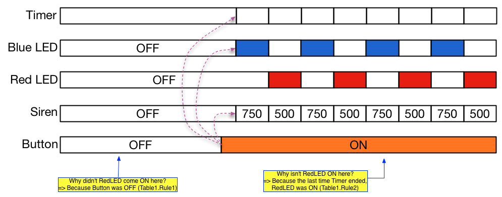

Zonk! Micro
Ned Konz
Hackers Conference 2012
Warning: Mostly Vaporware!
https://github.com/bikeNomad/zonk_micro.git
What is Zonk! Micro?
Programming System for “Physical Computing”
- Programming language with multiple editors
- Simulation of I/O
- Applications portable between targets
- Playback of recorded trace data for debugging
Programs run on:
- Microcontroller-based gadgets
- Desktop operation using data acquisition modules or microcontroller boards as I/O slaves
Audience
Audience
- Gadgeteers
- Kids
- Technicians
- Scientists
- Industrial Designers
- Everyone!
Competition
- Arduino (C++ with library)
- Modkit Micro (Tile programming, 1:1 with Arduino code)
Modes of operation
Desktop only
- Fully simulated: runs on desktop with all virtual I/O
Desktop connected to external hardware
- Microcontroller tethered to desktop (serial, USB, IR, Bluetooth…)
- Micro sends trace data to desktop
- Read/write target I/O from desktop
- Desktop connected to data acquisition devices
- Can change virtual I/O to target I/O point by point
- good for bringing up hardware incrementally
Modes of operation (con’t.)
Autonomous microcontroller tethered to desktop
- Application runs on micro but still sends trace data to desktop
- Can verify operation of target program at full speed
Autonomous microcontroller
- Runs standalone, using available memory to collect most recent trace data
- Can re-connect tether at any time to see real-time I/O and historical trace data
Zonk’s Views
Can move between views at will (wizard-free!)
- System and Connection Editor
- Task Editor
- Table Editor
- Text Editor
- Trace History View
System & Connection Editor
- Presents “cookbook” style design patterns for connection of common sensors and actuators
- Lets you easily move an application between different targets
- Monitors I/O using microcontroller board as an I/O slave
- Allows logging of I/O status while tethered or simulated
- Allows changing output values while tethered or simulated
Task Editor
Add outputs to a Task (Tasks own outputs)
- Digital, Analog outputs
- Variables
- Events (broadcast to all tasks)
- Tickers
- Timers (one-shot)
- Communications (serial, I2C, SPI…)
Task Editor (con’t.)
- Digital, Analog inputs (multiple Tasks can use the same inputs)
- Outputs can be used as inputs
- Variables (set by other Tasks)
- Events
- Communications
Add Rule Tables to a Task
Table Editor
- Tables are equivalent to states
- Rules encode behavior.
- Rules’ Input conditions
- AND combination; unset == don’t care
- Digital Inputs are ON/OFF
- Analog Inputs are above/below/inside range/outside range
- Events have happened
- Timers have ticked or timed out
- Table has just been entered
Table Editor (con’t.)
Rules’ Output actions
- Turn Digital Outputs ON/OFF
- Set Analog Outputs to a value
- Set/Modify Variables
- Trigger/Stop/Start Timers or Tickers
- Play a sound
- Broadcast an event
- Communicate
- Switch Task’s current Table to a different Table
Textual Editor
Offers textual version of Task and Table editors
- Syntax Directed
- Syntax highlighting
- Can switch back and forth between Text and Task or Table editors
Trace History View
- Events, Rule firings, Table and Task actions are timestamped and stored
- Recorded in available memory for later communication/playback
- Sent over communications link (if available) for recording on desktop
- Support for collaboration
- Can be annotated with text or pictures
- Can be synchronized with separately recorded video
- Can share trace plus annotations/video with others
- Answer questions about program operation
- Why did something unexpected happen?
- Why didn’t something happen as expected?
Trace History View Example

Collaboration Support
Collaboration is important!
- One of the big reasons for Arduino’s success
- Need something past copy and paste
- Want to support collaborative debugging over the ‘net
Zonk provides:
- Sharing of behaviors at the Task and Application level
- Sharing of trace histories (with optional annotations and synchronized video)
- Version control (using git)
Deployment Model
- Editors all HTML/Javascript based
- Graphical views probably HTML Canvas or SVG
- Editors send model to back-end
- Back end is a HTTP server (Ruby/Sinatra) running on desktop
- Need local server for access to target hardware
- Server will use target-specific tools for compilation and/or communication
- Runtime support is target-specific
Plans for the Future
- Make a working version!
- Initial targets: Arduino, LabJack U3 (USB DAQ module), mbed (ARM Inc. microcontroller board)
- Decide on a business model
- Prefer Open Source for practical reasons
- Kickstarter funding?
- Branded/target-specific versions for hardware suppliers
- Free program; Subscription model for collaboration?
- Online Presence
- Offers access to collaboration tools
- More cookbook entries for system design
- Support forums
- Application sharing